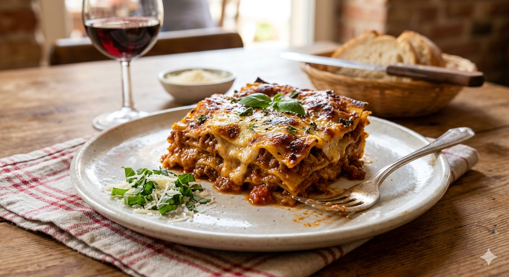
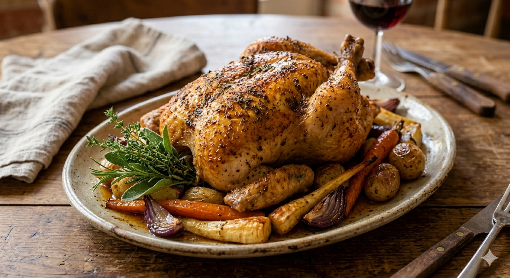
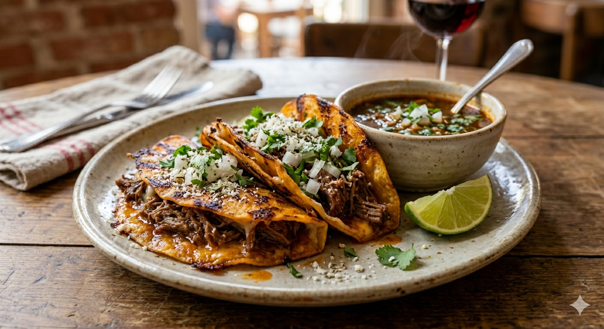

This slice is a hearty, structural masterpiece of classic comfort food. It features clearly defined, robust layers of delicate pasta sheets sandwiched between a rich, deeply caramelized beef ragù and a creamy, velvet-like béchamel.

This whole roasted chicken is presented as a structural and flavor centerpiece, defined by its flawless golden-brown patina and incredibly crisp, taut skin. The surface texture, visible under a gentle sheen of rendered fat and savory drippings, hints at a meticulous preparation—likely achieved through thorough dry-brining or an high-heat finish.

These birria tacos (specifically quesabirria) are a masterclass in texture and bold, savory flavor. The corn tortillas have been dipped in the chili-laden fat from the stew and grilled until they possess a crispy, stained-orange exterior with charred, lacy cheese edges.